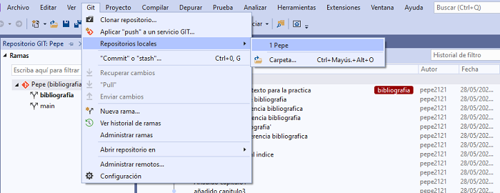

Git vs Visual Studio 2019
¿Cómo usar Git en Visual Studio?
Hay 3 formas de usar Git en Visual Studio:
1- Abrimos un repositorio de Git ya creado.
2- Creamos un nuevo repositorio de Git.
3- Clonamos un repositorio de Git ya creado.
Añadir repositorio existente
Si tenemos algún repositorio creado previamente podremos abrirlo siguiendo estos pasos:

Aquí podremos ver los repositorios locales que tenemos creados.
Crear un repositorio
Vamos al menú superior de Visual Studio sobre GIT > "Aplicar Push a un servicio GIT"

Desde esta ventana podremos crear el repositorio GIT y darle los parámetros que queramos como por ejemplo
ponerlo en privado o en público o crearlo en local o en remoto.
Clonar repositorio
Clonar un repositorio permite modificar el código para posteriormente añadirlo al proyecto final. Además permite ver los cambios que han ocurrido en el código del proyecto, saber quien ha modificado cada cosa...
Para clonar un repositorio hacemos clic sobre GIT y luego sobre clonar repositorio.

Caracteristicas del repositorio
Una vez tenemos un repositorio seleccionado podemos ver el estado de este mismo abajo a la derecha de la pantalla de visual studio

La flecha hacia arriba de la derecha del todo indica los commits pendientes de realizar push, el lapiz indica los cambios en el area de ensayo, a la derecha vemos el repositorio en el que nos encontramos y las dos flechas de la derecha del todo indican la rama actual.
Mientras vamos trabajando en el proyecto, Visual Studio realiza un seguimiento de los cambios. Además. desde esta ventana podremos realizar commits.

Los cambios se pueden ver haciendo clic en el botón Git Changes en el explorador de archivos.
Crear una rama
Además de repositorios, también podremos crear ramas.